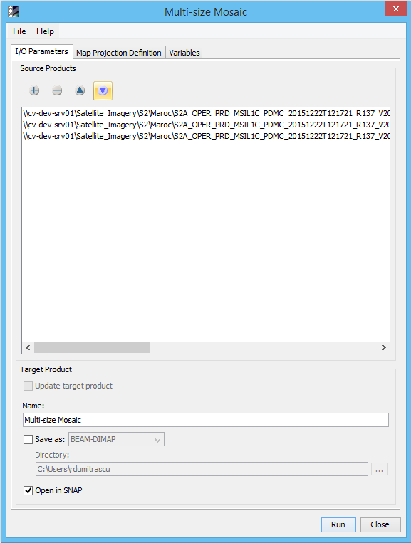
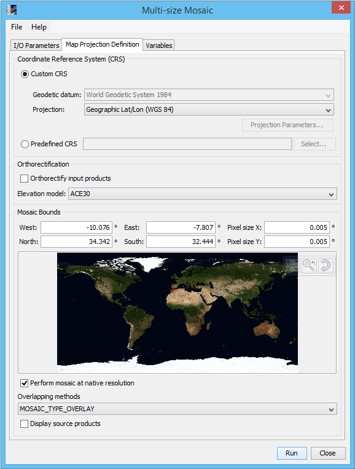

| Multi-size Mosaic |
|
Source Products
Specify the source products which shall be combined to one mosaic. Target ProductName: Used to specify the name of the target product.
Save as:
Used to specify whether the target product should be saved to the file system. The
combo box presents a list of file formats.
The text field allows to specify a target directory. Open in SNAP: Used to specify whether the target product should be opened in the Sentinel Toolbox. When the target product is not saved, it is opened in the Sentinel Toolbox automatically. |
 |
Coordinate Reference System (CRS)Custom CRS: The transformation used by the projection can be selected. Also the geodetic datum and transformation parameters can be set, if possible for the selected transformation. Predefined CRS: By clicking on the Select... button a new Select Coordinate Reference System Dialog is shown where a predefined CRS can be selected. OrthorectificationOrthorectify input products: If selected the source products are not only reprojected to the defined CRS but also orthorectified.
Elevation model:
You can select the digital elevation model which should be used for
orthorectification. Either you use the internal elevation
model of
the product or an external DEM. If you select an external DEM and it is currently not installed on your
system,
a dialog will appear to enable you to download and install the DEM. Mosaic BoundsWest: Specifies the western bound in degree which is guaranteed to be within the geographical boundary of the output product. East: Specifies the eastern bound in degree which is guaranteed to be within the geographical boundary of the output product. North: Specifies the northern bound in degree which is guaranteed to be within the geographical boundary of the output product. South: Specifies the southern bound in degree which is guaranteed to be within the geographical boundary of the output product. Pixel size X: Specifies the pixel size in X direction of the output product in map units. Pixel size Y: Specifies the pixel size in Y direction of the output product in map units. World Map: The world map in which the geographical boundary of the resulting output product is displayed. Perform mosaic at native resolution: If selected the created mosaic image is at the native resolution of the source products, no resample is produced on the source products. For the mosaic to work, the input products must have the same number of bands, the same band names and the bands must have the same resolution. When "Perform mosaic at native resolution" check box is unselected the Mosaic is performed at the resolution given by "Pixel size X" and "Pixel size Y" values. When at least one of the input products is uni-size the "Perform mosaic at native resolution" check box is disabled. When all the input product are uni-size the old mosaic operator is called and the "Perform mosaic at native resolution" check box is disabled also the Overlapping Methods is disabled.
Overlapping Methods:
There are two types of creating a mosaic image: Blend or Overlay.
Display source products: If selected the geographic boundaries of the source products are also displayed in the world map. |
 |
|
Defines the list of output variables. |

|